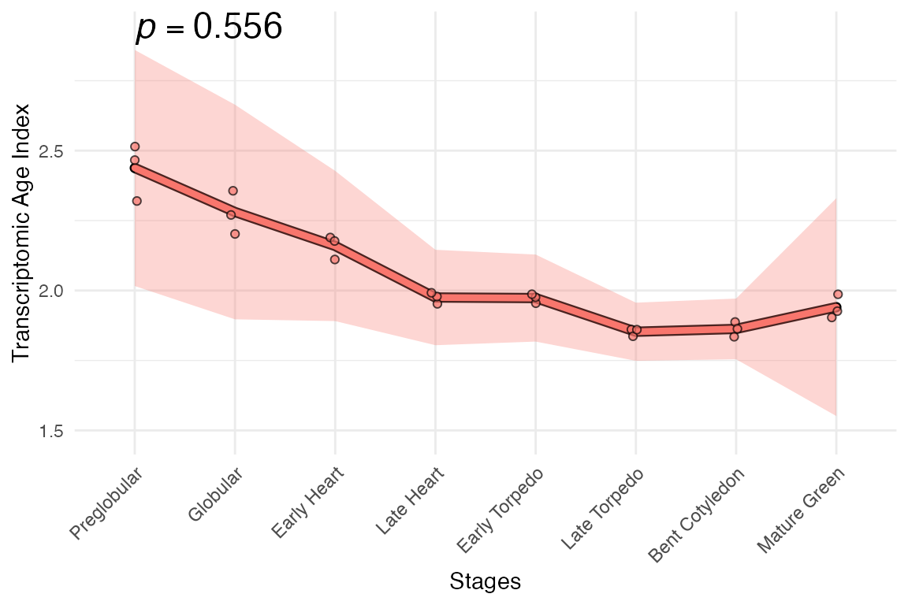
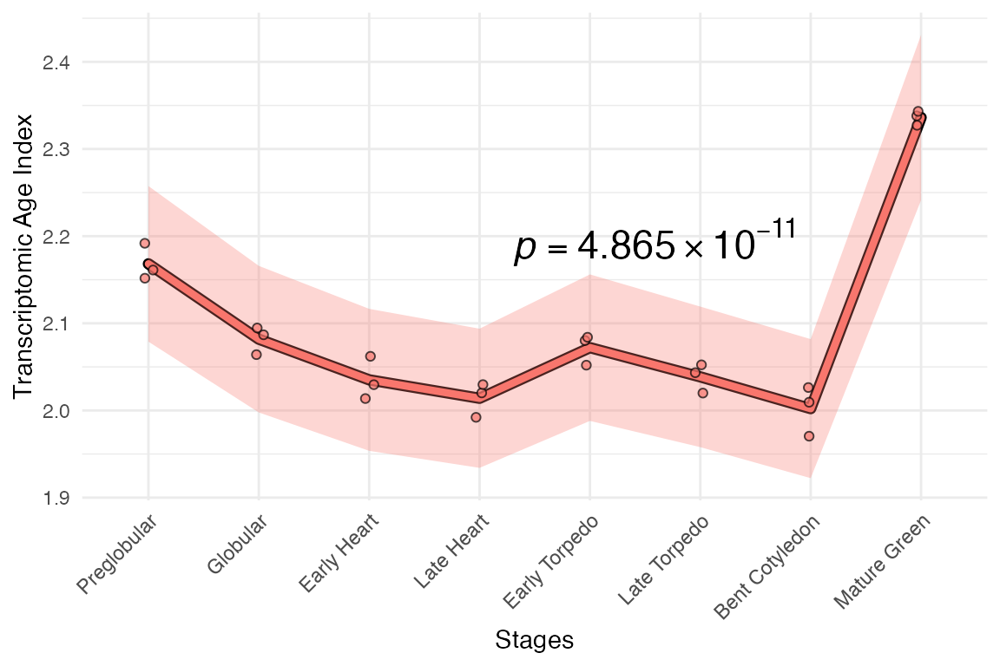
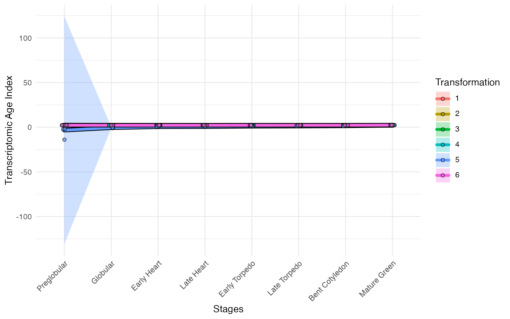
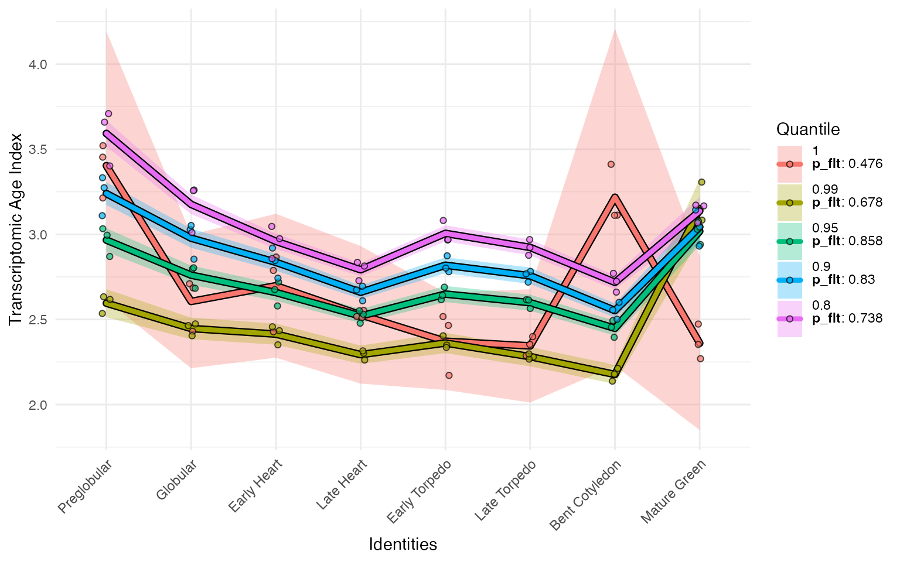
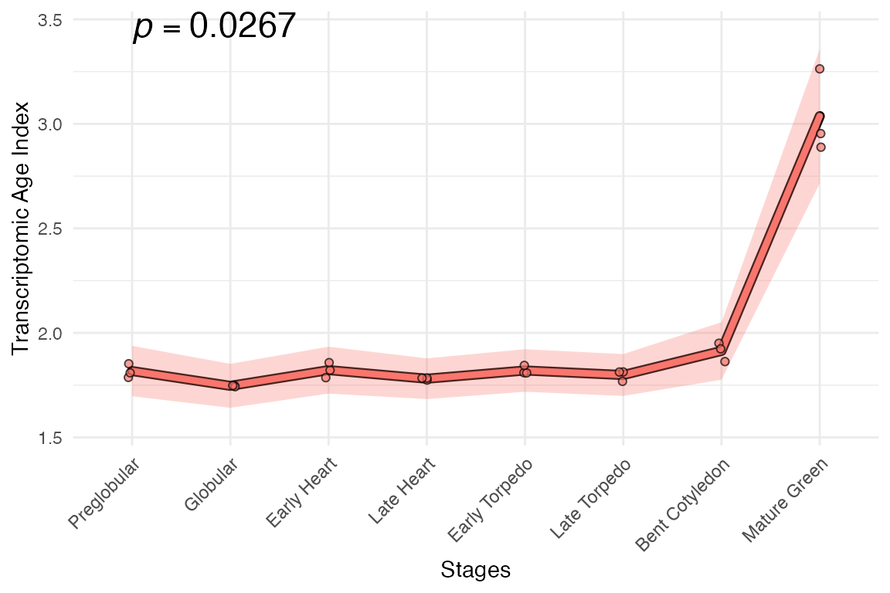
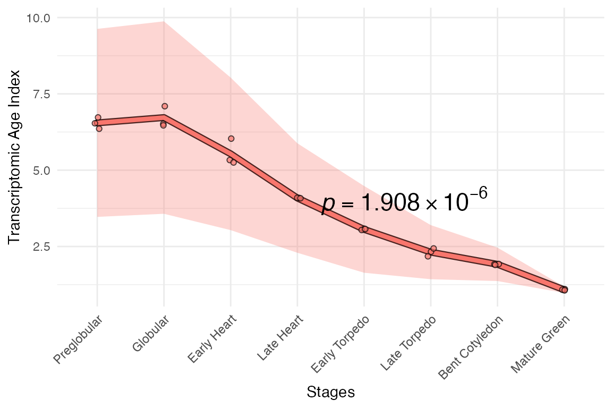
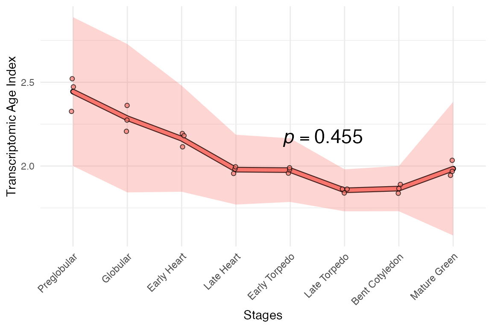

As noted in the vignette Statistical testing with myTAI,
RNA-seq data transformation (e.g. log2 transformation) can affect the
results of the tests and the overall TAI (as well as TDI, TSI and
analogous) profile. There has been a lively debate around this topic
(see Piasecka
et al. (2013) and Liu &
Robinson-Rechavi (2018) for more information).
How can we use this to our advantage?
The myTAI package provides a flexible framework to apply
different transformations to the expression data in a
PhyloExpressionSet object. This allows you to evaluate the
robustness of the results, i.e. whether the observed
patterns are driven primarily by variation in highly expressed genes
(e.g. raw TPM or counts), by variation in lowly expressed
genes (e.g. under log2 or vst transformation), or somewhere
in between (e.g. sqrt transformation).
The myTAI package provides a function
myTAI::tf() that allows you to apply any transformation
function to the expression data in a PhyloExpressionSet
object. This function is flexible and can be used with any
transformation function that takes a matrix as input.
Here is a more extreme example of changes to the overall TAI pattern due to RNA-seq transformations.
data("example_phyex_set")
# no transformation
myTAI::plot_signature(example_phyex_set)## Computing: [========================================] 100% (done)
# rank transformation
myTAI::plot_signature(example_phyex_set |> myTAI::tf(FUN = function(x) apply(x, 2, base::rank)))## Computing: [========================================] 100% (done)
Indeed, myTAIv2 is fitted with a single plotting
function (myTAI::plot_signature_transformed()) to evaluate
the robustness of the patterns against multiple transformations,
i.e.
myTAI::plot_signature_transformed(example_phyex_set)## Computing: [========================================] 100% (done)
## Computing: [========================================] 100% (done)
## Computing: [========================================] 100% (done)
## Computing: [========================================] 100% (done)
See how different some of the transformations are! In general,
though, the earlier stages are younger compared to the mid-stage. Across
most transformations, the late-stage is younger compared to the
mid-stage. This is consistent with the molecular hourglass
model.
In addition, the p-values for various tests (default = flat line
test) can be assessed through the myTAI::tf_stability()
function. The test can be changed with the
conservation_test argument,
e.g. conservation_test = stat_flatline_test,
conservation_test = stat_flatline_test and so on.
tf_stability_res <- myTAI::tf_stability(example_phyex_set)
tf_stability_res## none sqrt log2 rank vst rlog
## 7.620014e-01 1.341271e-05 1.281174e-38 9.470500e-81 7.092673e-35 6.623347e-51Here, we can see that the p-values for the flat line test are all below 0.05 for all transformations. This is reassuring as to the stability of the TAI profile across transformations.
Indeed, within the myTAI::plot_signature_transformed()
function, we can also set the conservation_test parameter
(e.g. conservation_test = stat_flatline_test) alongside the
display for the p-values (show_p_val = TRUE), to get an
all-in-one plot!
If you are curious about the exact nature of the transformations used
by myTAI::plot_signature_transformed() and
myTAI::tf_stability() you can check the list of functions
that were applied via print(myTAI::COUNT_TRANSFORMS). Note
that DESeq2-based transforms (‘vst’, ‘rlog’) are only available if
DESeq2 is installed.
To remove transformations, e.g. “rlog”, “rank”, “vst” from the list, e.g.
COUNT_TRANSFORMS_REMOVED <- COUNT_TRANSFORMS[!names(COUNT_TRANSFORMS) %in% c("rlog", "rank", "vst")]To add transformations, e.g.
Then apply to tf_stability or plot_signature functions, e.g.
myTAI::tf_stability(example_phyex_set, transformations = COUNT_TRANSFORMS_REMOVED)
myTAI::plot_signature_transformed(example_phyex_set, transformations = COUNT_TRANSFORMS_REMOVED)For ScPhyloExpressionSet, it is important to remove
certain transformations such as “rlog”, “rank”, “vst” and “log2” as they
are not suitable for single cell data.
Alternatively (or in conjunction) to the transformations,
myTAIv2 allows us to check how stable the TAI profile is
after progressively removing the top expressed genes. This can be done
using the myTAI::plot_signature_gene_quantiles() function.
By default, the quantiles are set to 1, 0.99,
0.95, 0.9 and 0.8 (i.e. from
removing no genes quantile = 1 to removing the top 20% of
expressed genes quantile = 0.8).
myTAI::plot_signature_gene_quantiles(example_phyex_set)
From this, we can see that the most of the ‘bulge’ on the Bent Cotyledon stage is driven by a very few highly expressed genes. Otherwise, the TAI profile is very stable.
We could also filter genes based on other categories using:myTAI::genes_top_variance() → get high variance genes.
myTAI::genes_top_mean() and
myTAI::genes_top_expr() → get highly expressed genes, like
in in myTAI::plot_signature_gene_quantiles()myTAI::genes_lowly_expressed() → get lowly expressed
genes
# get top 1% variance genes (default parameters)
genes.top_var <- myTAI::genes_top_variance(example_phyex_set)
# get top 1% expressed genes (default parameters)
genes.top_mean <- myTAI::genes_top_mean(example_phyex_set)
# get lowly expressed genes with mean < 1 (default parameters)
genes.low_expr <- myTAI::genes_lowly_expressed(example_phyex_set)Once you have a gene set, we can use
myTAI::remove_genes() to filter out genes in a given
set:
# removing top 1% variance genes
example_phyex_set.rm_top_var <-
myTAI::remove_genes(example_phyex_set, genes.top_var)
# plot
myTAI::plot_signature(example_phyex_set.rm_top_var)
We could also use myTAI::select_genes() to keep the
genes in a given set:
# select top 1% expressed genes
example_phyex_set.select_top_expr <-
myTAI::select_genes(example_phyex_set, genes.top_mean)
# plot
myTAI::plot_signature(example_phyex_set.select_top_expr)## Computing: [========================================] 100% (done)
If you have certain genes of interest, we can also select or remove
individual genes with myTAI::select_genes() and
myTAI::remove_genes(), respectively.
# remove two genes (AT1G02780 & AT1G03880)
example_phyex_set.select_goi <-
myTAI::remove_genes(example_phyex_set, c("AT1G02780", "AT1G03880"))
# plot
myTAI::plot_signature(example_phyex_set.select_goi)
For a more sophisticated workflow to extract genes that drive the TAI
profile, check out this vignette
→ Break TAI patterns using gaTAI
Another aspect of the myTAI package is the ability to
transform gene age information itself using the
myTAI::tf_PS() function. This workflow is still being
tested and will be documented in due time.
The choice of RNA-seq data transformation (including no transformation) is an important and often overlooked aspect of gene expression data analysis. These choices may affect the results of the TAI (and related indices) profiles, as well as the statistical tests and the interpretation of the data.
myTAIv2 provides a powerful framework to apply various
RNA-seq data transformations to BulkPhyloExpressionSet and
ScPhyloExpressionSet objects. With this, we can use the
transformed patterns to our advantage, namely, to evaluate the overall
robustness of our patterns. We also explored the stability of the TAI
profile after progressively removing the top expressed genes. Taken
together, these analyses allow us to better understand the expression
levels of genes that drive the TAI profile.
While we can perturb the TAI patterns in silico, nothing beats repeating experiments in the lab, with multiple biological replicates and gold-standard protocols for RNA-seq data generation and processing.